from langchain_core.prompts import PromptTemplate
from langchain_openai import ChatOpenAI
from matplotlib.collections import EllipseCollection
from matplotlib.colors import Normalize
from scipy.stats import trim_mean
from statsmodels import robust
import matplotlib.pyplot as plt
import mlba
import numpy as np
import pandas as pd
import random
import seaborn as sns
import wquantiles
random.seed(123)
# Location of the data files. Adjust this path if you keep the data
# files in a different directory.
from pathlib import Path
DATA_DIR = Path('../../data')Chapter 1: Exploratory Data Analysis
- 2019-2026 Peter C. Bruce, Andrew Bruce, Peter Gedeck
Exploratory Data Analysis
Data Dictionaries and Catalogs
PROMPT = """
Improve the attached data dictionary and return it in YAML format. In addition
to the description of features, provide name, description, source, and size
of the dataset.
For each feature, provide the following information:
- feature name
- readable variable name (if required)
- definition of the variable
- data type
- measurement units
- allowed values (for categorical or nominal features, but only if you are sure)
Here is the data dictionary in YAML format:
{data_dictionary}
First ten lines of the dataset in CSV format:
{data_sample}
"""chain = (
PromptTemplate.from_template(PROMPT) |
ChatOpenAI(model="gpt-5")
)data_dictionary = """
name: ebay Auctions
description: >
The dataset eBayAuctions.csv contains information on 1972 auctions that
transacted on eBay.com during May-June 2004.
source: Copyright 2016 Galit Shmueli and Peter Bruce
size:
observations: 1972
features: 8
features:
Category: Category of the auctioned item
currency: "US: US dollar, GBP: English pound, EUR: Euro"
sellerRating: >
a rating by eBay, as a function of the number of "good" and "bad"
transactions the seller had on eBay
Duration: Number of days the auction lasted (set by seller at auction start)
endDay: Day of week that the auction closed
ClosePrice: Price item sold at (converted into USD)
OpenPrice: Initial price set by the seller (converted into USD)
Competitive?: whether the auction had a single bid (0) or more (1)
"""
eBayAuctions = mlba.load_data("eBayAuctions")
data_sample = eBayAuctions.sample(10, random_state=123).to_csv(index=False)
context = {
"data_dictionary": data_dictionary,
"data_sample": data_sample,
}
result = chain.invoke(context)
print(result.content)name: eBay Auctions (May–June 2004)
description: >
Dataset of 1,972 completed auctions on eBay.com during May–June 2004.
Records include listing category, listing currency, seller feedback rating,
auction duration, day-of-week the auction ended, opening price (USD),
closing price (USD), and an indicator of whether the auction received
multiple bids (competitive). Note: OpenPrice and ClosePrice are converted
to U.S. dollars regardless of the listing currency; currency records the
currency in which the auction was originally listed.
source: Copyright 2016 Galit Shmueli and Peter Bruce (eBayAuctions.csv)
size:
observations: 1972
features: 8
features:
- name: Category
readable_name: category
definition: Top-level category of the auctioned item as shown on the eBay listing.
data_type: categorical (string)
measurement_units: none
- name: currency
readable_name: listing_currency
definition: Currency in which the auction was listed; prices in this dataset are converted to USD.
data_type: categorical (string; code)
measurement_units: none
allowed_values:
- code: US
label: U.S. dollar (USD)
- code: GBP
label: British pound sterling (GBP)
- code: EUR
label: Euro (EUR)
- name: sellerRating
readable_name: seller_rating
definition: Seller’s feedback rating on eBay at the time of the auction; higher values indicate more positive history.
data_type: integer (non-negative)
measurement_units: rating points
- name: Duration
readable_name: duration_days
definition: Number of days the auction lasted (set by the seller at auction start).
data_type: integer
measurement_units: days
allowed_values: [1, 3, 5, 7, 10]
- name: endDay
readable_name: end_day_of_week
definition: Day of the week on which the auction closed.
data_type: categorical (string; day-of-week)
measurement_units: none
allowed_values: [Sun, Mon, Tue, Wed, Thu, Fri, Sat]
- name: ClosePrice
readable_name: close_price_usd
definition: Final transaction price (winning bid) of the auction, converted to U.S. dollars.
data_type: float (decimal)
measurement_units: USD
- name: OpenPrice
readable_name: open_price_usd
definition: Initial starting price set by the seller, converted to U.S. dollars.
data_type: float (decimal)
measurement_units: USD
- name: Competitive?
readable_name: is_competitive
definition: Indicator of whether the auction received more than one bid (competitive) versus a single bid.
data_type: integer (binary)
measurement_units: none
allowed_values:
- value: 0
label: Single bid (not competitive)
- value: 1
label: Multiple bids (competitive)Estimates of Location
Example: Location Estimates of Population and Murder Rates
state = pd.read_csv(DATA_DIR / "state.csv")
print(f"Mean: {state['Population'].mean()}")
print(f"Trimmed mean: {trim_mean(state['Population'], 0.1)}")
print(f"Median: {state['Population'].median()}")Mean: 6162876.3
Trimmed mean: 4783697.125
Median: 4436369.5weighted_mean = np.average(state["Murder.Rate"], weights=state["Population"])
weighted_quantile = wquantiles.median(state["Murder.Rate"],
weights=state["Population"])
print(f"Weighted mean: {weighted_mean}")
print(f"Weighted median: {weighted_quantile}")Weighted mean: 4.445833981123393
Weighted median: 4.4Estimates of Variability
Example: Variability Estimates of State Population
print(state["Population"].std())
print(state["Population"].quantile(0.75) - state["Population"].quantile(0.25))
print(robust.scale.mad(state["Population"]))6848235.347401142
4847308.0
3849876.1459979336Exploring the Data Distribution
Percentiles and Boxplots
state[["Murder.Rate"]].quantile([0.05, 0.25, 0.5, 0.75, 0.95])| Murder.Rate | |
|---|---|
| 0.05 | 1.600 |
| 0.25 | 2.425 |
| 0.50 | 4.000 |
| 0.75 | 5.550 |
| 0.95 | 6.510 |
ax = (state["Population"] / 1_000_000).plot.box(figsize=(3, 4))
ax.set_ylabel("Population (millions)")
plt.tight_layout()
plt.show()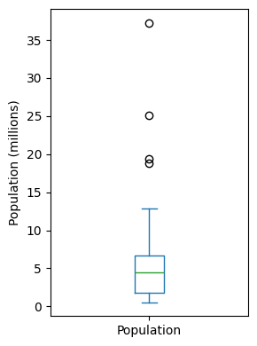
Frequency Tables and Histograms
binned_population = pd.cut(state["Population"], 10)
binned_population.value_counts()Population
(526935.67, 4232659.0] 24
(4232659.0, 7901692.0] 14
(7901692.0, 11570725.0] 6
(11570725.0, 15239758.0] 2
(15239758.0, 18908791.0] 1
(18908791.0, 22577824.0] 1
(22577824.0, 26246857.0] 1
(33584923.0, 37253956.0] 1
(26246857.0, 29915890.0] 0
(29915890.0, 33584923.0] 0
Name: count, dtype: int64ax = (state["Population"] / 1_000_000).plot.hist(figsize=(4, 4))
ax.set_xlabel("Population (millions)")
plt.tight_layout()
plt.show()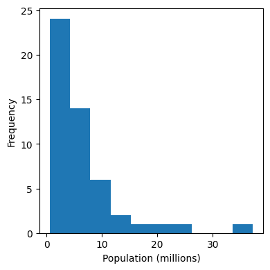
Density Plots and Estimates
ax = state["Murder.Rate"].plot.hist(density=True, xlim=[0, 12],
bins=range(1, 12))
state["Murder.Rate"].plot.density(ax=ax)
ax.set_xlabel("Murder Rate (per 100,000)")
plt.tight_layout()
plt.show()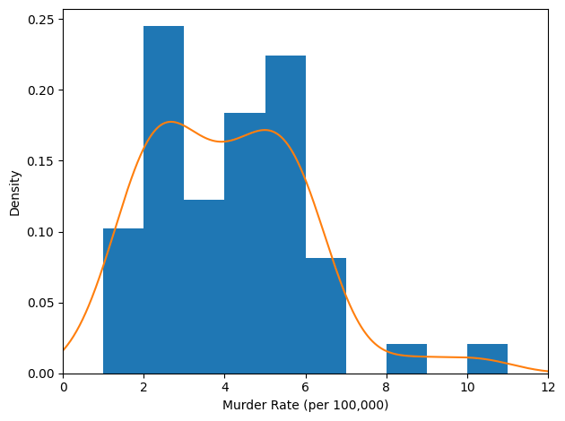
Exploring Binary and Categorical Data
dfw = pd.read_csv(DATA_DIR / "dfw_airline.csv")
ax = dfw.transpose().plot.bar(figsize=(4, 4), legend=False)
ax.set_xlabel("Cause of delay")
ax.set_ylabel("Count")
plt.tight_layout()
plt.show()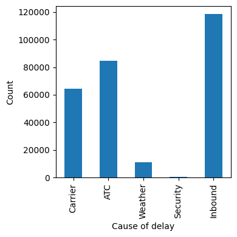
Correlation
sp500_px = pd.read_csv(DATA_DIR / "sp500_data.csv.gz", index_col=0)
sp500_sym = pd.read_csv(DATA_DIR / "sp500_sectors.csv")
etf_symbols = sp500_sym[sp500_sym["sector"] == "etf"]["symbol"]
etfs = sp500_px.loc[sp500_px.index > "2012-07-01", etf_symbols]
sns.heatmap(etfs.corr(), vmin=-1, vmax=1,
cmap=sns.diverging_palette(20, 220, as_cmap=True))
plt.tight_layout()
plt.show()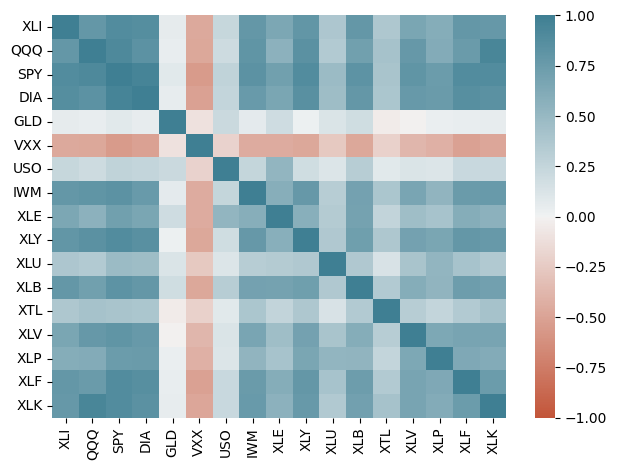
Scatterplots
# Filter data for dates July 2012 through June 2015
telecom = sp500_px.loc[sp500_px.index >= "2012-07-01", :]
ax = telecom.plot.scatter(x="T", y="VZ", figsize=(4, 4), marker="$\u25EF$")
ax.set_xlabel("ATT (T)")
ax.set_ylabel("Verizon (VZ)")
ax.axhline(0, color="grey", lw=1)
ax.axvline(0, color="grey", lw=1)
plt.tight_layout()
plt.show()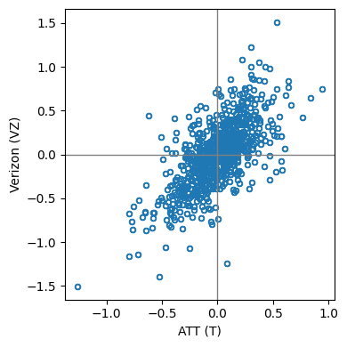
Exploring Two or More Variables
Hexagonal Binning and Contours pass:[<span class#“keep-together”>(Plotting Numeric-Versus-Numeric Data)]
kc_tax = pd.read_csv(DATA_DIR / "kc_tax.csv.gz")
kc_tax0 = kc_tax.loc[(kc_tax.TaxAssessedValue < 750000) &
(kc_tax.SqFtTotLiving > 100) &
(kc_tax.SqFtTotLiving < 3500), :]
kc_tax0.shape(432693, 3)ax = kc_tax0.plot.hexbin(x="SqFtTotLiving", y="TaxAssessedValue",
gridsize=30, sharex=False, figsize=(5, 4))
ax.set_xlabel("Finished Square Feet")
ax.set_ylabel("Tax-Assessed Value")
plt.tight_layout()
plt.show()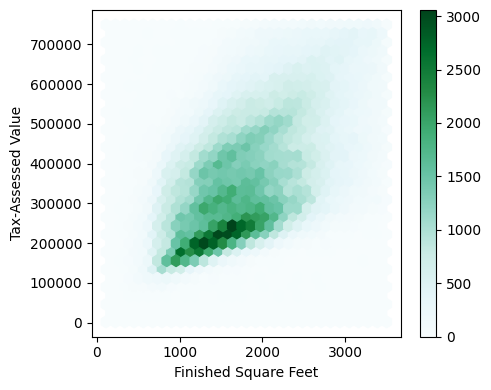
ax = sns.kdeplot(data=kc_tax0.sample(10000), x="SqFtTotLiving",
y="TaxAssessedValue")
ax.set_xlabel("Finished Square Feet")
ax.set_ylabel("Tax-Assessed Value")
plt.tight_layout()
plt.show()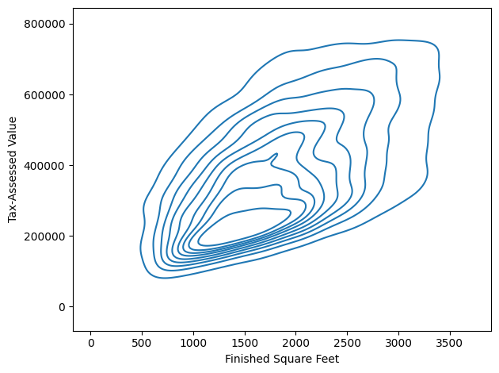
Two Categorical Variables
lc_loans = pd.read_csv(DATA_DIR / "lc_loans.csv")
crosstab = lc_loans.pivot_table(index="grade", columns="status",
aggfunc=len, margins=True)
print(crosstab)
df = crosstab.loc["A":"G", :].copy()
perc_crosstab = df.loc[:, "Charged Off":"Late"].div(df["All"], axis=0)
perc_crosstab["All"] = df["All"] / sum(df["All"])
print(perc_crosstab)status Charged Off Current Fully Paid Late All
grade
A 1562 50051 20408 469 72490
B 5302 93852 31160 2056 132370
C 6023 88928 23147 2777 120875
D 5007 53281 13681 2308 74277
E 2842 24639 5949 1374 34804
F 1526 8444 2328 606 12904
G 409 1990 643 199 3241
All 22671 321185 97316 9789 450961
status Charged Off Current Fully Paid Late All
grade
A 0.021548 0.690454 0.281528 0.006470 0.160746
B 0.040054 0.709013 0.235401 0.015532 0.293529
C 0.049828 0.735702 0.191495 0.022974 0.268039
D 0.067410 0.717328 0.184189 0.031073 0.164708
E 0.081657 0.707936 0.170929 0.039478 0.077177
F 0.118258 0.654371 0.180409 0.046962 0.028614
G 0.126196 0.614008 0.198396 0.061401 0.007187Categorical and Numeric Data
airline_stats = pd.read_csv(DATA_DIR / "airline_stats.csv")
ax = airline_stats.boxplot(by="airline", column="pct_carrier_delay")
ax.set_xlabel("")
ax.set_ylabel("Daily % of Delayed Flights")
plt.suptitle("")
plt.tight_layout()
plt.show()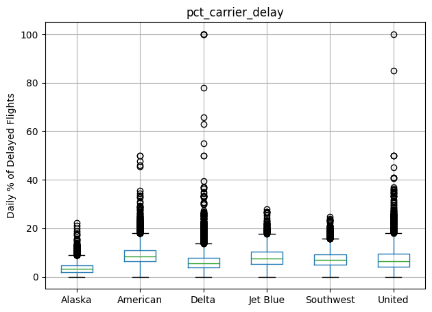
ax = sns.violinplot(data=airline_stats, x="airline", y="pct_carrier_delay",
inner="quartile", color="white")
ax.set_xlabel("")
ax.set_ylabel("Daily % of Delayed Flights")
plt.tight_layout()
plt.show()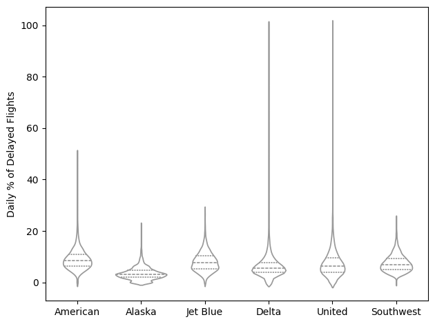
Visualizing Multiple Variables
zip_codes = [98188, 98105, 98108, 98126]
kc_tax_zip = kc_tax0.loc[kc_tax0.ZipCode.isin(zip_codes), :]
def hexbin(x, y, color, **kwargs):
cmap = sns.light_palette(color, as_cmap=True)
plt.hexbin(x, y, gridsize=25, cmap=cmap, **kwargs)
g = sns.FacetGrid(kc_tax_zip, col="ZipCode", col_wrap=2)
g.map(hexbin, "SqFtTotLiving", "TaxAssessedValue",
extent=[0, 3500, 0, 700000])
g.set_axis_labels("Finished Square Feet", "Tax-Assessed Value")
g.set_titles("Zip code {col_name:.0f}")
plt.tight_layout()
plt.show()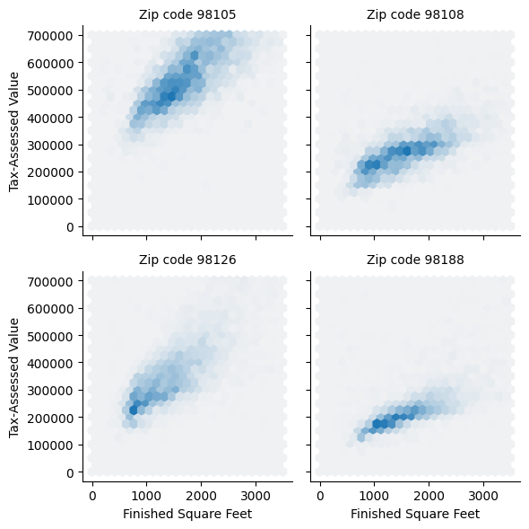
Supplementary Material
Table 1-2. A few rows of the data.frame state of population and murder rate by state
print(state.head(8)) State Population Murder.Rate Abbreviation
0 Alabama 4779736 5.7 AL
1 Alaska 710231 5.6 AK
2 Arizona 6392017 4.7 AZ
3 Arkansas 2915918 5.6 AR
4 California 37253956 4.4 CA
5 Colorado 5029196 2.8 CO
6 Connecticut 3574097 2.4 CT
7 Delaware 897934 5.8 DETable 1-4. Percentiles of murder rate by state
percentages = [0.05, 0.25, 0.5, 0.75, 0.95]
df = pd.DataFrame(state["Murder.Rate"].quantile(percentages))
df.index = [f"{p * 100}%" for p in percentages]
print(df.transpose()) 5.0% 25.0% 50.0% 75.0% 95.0%
Murder.Rate 1.6 2.425 4.0 5.55 6.51Table 1-5. A frequency table of population by state
binnedPopulation = pd.cut(state["Population"], 10)
print(binnedPopulation.value_counts())
binnedPopulation.name = "binnedPopulation"
df = pd.concat([state, binnedPopulation], axis=1)
df = df.sort_values(by="Population")
groups = []
for group, subset in df.groupby(by="binnedPopulation", observed=False):
groups.append({
"BinRange": group,
"Count": len(subset),
"States": ",".join(subset.Abbreviation),
})
pd.DataFrame(groups)Population
(526935.67, 4232659.0] 24
(4232659.0, 7901692.0] 14
(7901692.0, 11570725.0] 6
(11570725.0, 15239758.0] 2
(15239758.0, 18908791.0] 1
(18908791.0, 22577824.0] 1
(22577824.0, 26246857.0] 1
(33584923.0, 37253956.0] 1
(26246857.0, 29915890.0] 0
(29915890.0, 33584923.0] 0
Name: count, dtype: int64| BinRange | Count | States | |
|---|---|---|---|
| 0 | (526935.67, 4232659.0] | 24 | WY,VT,ND,AK,SD,DE,MT,RI,NH,ME,HI,ID,NE,WV,NM,N... |
| 1 | (4232659.0, 7901692.0] | 14 | KY,LA,SC,AL,CO,MN,WI,MD,MO,TN,AZ,IN,MA,WA |
| 2 | (7901692.0, 11570725.0] | 6 | VA,NJ,NC,GA,MI,OH |
| 3 | (11570725.0, 15239758.0] | 2 | PA,IL |
| 4 | (15239758.0, 18908791.0] | 1 | FL |
| 5 | (18908791.0, 22577824.0] | 1 | NY |
| 6 | (22577824.0, 26246857.0] | 1 | TX |
| 7 | (26246857.0, 29915890.0] | 0 | |
| 8 | (29915890.0, 33584923.0] | 0 | |
| 9 | (33584923.0, 37253956.0] | 1 | CA |
Table 1-6. Percentage of delays by cause at Dallas/Fort Worth Airport
dfw = pd.read_csv(DATA_DIR / "dfw_airline.csv")
print(100 * dfw / dfw.to_numpy().sum()) Carrier ATC Weather Security Inbound
0 23.022989 30.400781 4.025214 0.122937 42.428079Table 1-7. Correlation between telecommunication stock returns
telecomSymbols = sp500_sym[sp500_sym["sector"] == "telecommunications_services"]["symbol"]
# Filter data for dates July 2012 through June 2015
telecom = sp500_px.loc[sp500_px.index >= "2012-07-01", telecomSymbols]
telecom.corr()
print(telecom) T CTL FTR VZ LVLT
Date
2012-07-02 0.422496 0.140847 0.070879 0.554180 -0.519998
2012-07-03 -0.177448 0.066280 0.070879 -0.025976 -0.049999
2012-07-05 -0.160548 -0.132563 0.055128 -0.051956 -0.180000
2012-07-06 0.342205 0.132563 0.007875 0.140106 -0.359999
2012-07-09 0.136883 0.124279 -0.023626 0.253943 0.180000
... ... ... ... ... ...
2015-06-25 0.049342 -1.600000 -0.040000 -0.187790 -0.330002
2015-06-26 -0.256586 0.039999 -0.070000 0.029650 -0.739998
2015-06-29 -0.098685 -0.559999 -0.060000 -0.504063 -1.360000
2015-06-30 -0.503298 -0.420000 -0.070000 -0.523829 0.199997
2015-07-01 -0.019737 0.080000 -0.050000 0.355811 0.139999
[754 rows x 5 columns]etfs = sp500_px.loc[sp500_px.index > "2012-07-01",
sp500_sym[sp500_sym["sector"] == "etf"]["symbol"]]
print(etfs.head()) XLI QQQ SPY DIA GLD VXX USO \
Date
2012-07-02 -0.376098 0.096313 0.028223 -0.242796 0.419998 -10.40 0.000000
2012-07-03 0.376099 0.481576 0.874936 0.728405 0.490006 -3.52 0.250000
2012-07-05 0.150440 0.096313 -0.103487 0.149420 0.239991 6.56 -0.070000
2012-07-06 -0.141040 -0.491201 0.018819 -0.205449 -0.519989 -8.80 -0.180000
2012-07-09 0.244465 -0.048160 -0.056445 -0.168094 0.429992 -0.48 0.459999
IWM XLE XLY XLU XLB XTL \
Date
2012-07-02 0.534641 0.028186 0.095759 0.098311 -0.093713 0.019076
2012-07-03 0.926067 0.995942 0.000000 -0.044686 0.337373 0.000000
2012-07-05 -0.171848 -0.460387 0.306431 -0.151938 0.103086 0.019072
2012-07-06 -0.229128 0.206706 0.153214 0.080437 0.018744 -0.429213
2012-07-09 -0.190939 -0.234892 -0.201098 -0.035751 -0.168687 0.000000
XLV XLP XLF XLK
Date
2012-07-02 -0.009529 0.313499 0.018999 0.075668
2012-07-03 0.000000 0.129087 0.104492 0.236462
2012-07-05 -0.142955 -0.073766 -0.142490 0.066211
2012-07-06 -0.095304 0.119865 0.066495 -0.227003
2012-07-09 0.352630 -0.064548 0.018999 0.009457 Figure 1-6. Correlation between ETF returns (Python version)
def plot_corr_ellipses(data, figsize=None, **kwargs):
""" https://stackoverflow.com/a/34558488 """
m = np.array(data)
if not m.ndim == 2:
raise ValueError("data must be a 2D array")
_, ax = plt.subplots(1, 1, figsize=figsize, subplot_kw={"aspect": "equal"})
ax.set_xlim(-0.5, m.shape[1] - 0.5)
ax.set_ylim(-0.5, m.shape[0] - 0.5)
ax.invert_yaxis()
# xy locations of each ellipse center
xy = np.indices(m.shape)[::-1].reshape(2, -1).T
# set the relative sizes of the major/minor axes according to the strength of
# the positive/negative correlation
w = np.ones_like(m).ravel() + 0.01
h = 1 - np.abs(m).ravel() - 0.01
a = 45 * np.sign(m).ravel()
ec = EllipseCollection(widths=w, heights=h, angles=a, units="x", offsets=xy,
norm=Normalize(vmin=-1, vmax=1),
transOffset=ax.transData, array=m.ravel(), **kwargs)
ax.add_collection(ec)
# if data is a DataFrame, use the row/column names as tick labels
if isinstance(data, pd.DataFrame):
ax.set_xticks(np.arange(m.shape[1]))
ax.set_xticklabels(data.columns, rotation=90)
ax.set_yticks(np.arange(m.shape[0]))
ax.set_yticklabels(data.index)
return ec, ax
m, ax = plot_corr_ellipses(etfs.corr(), figsize=(5, 4), cmap="bwr_r")
cb = plt.colorbar(m, ax=ax)
cb.set_label("Correlation coefficient")
plt.tight_layout()
plt.show()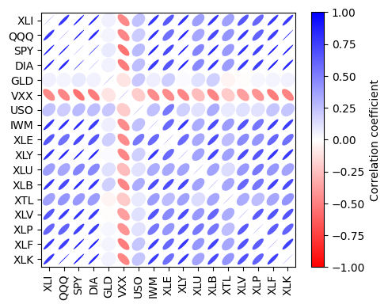